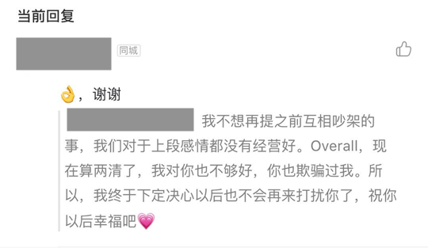
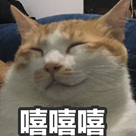

Say goodbye to Alice，and say hi to the future
思来想去，还是打算写下这篇文章。
这并不是一种多愁善感矫情，而是我希望可以平和的面对自己，面对未来。
人们常说，把自己想说的都写下来，就好了，因此有了这篇文章。
瞎想想
2019.6.15新增
过去一周，心态稍微平静了点。
我现在反而不敢做太“轻松容易”的事情，我怕自己习惯了那种easy的氛围，以至于真的碰到一点大浪就翻船，结果发现原来自己在一个小沟里而外面不过刮了一点小风💨。
同时感觉自己的偏执又多了一些，对于🏸️，对于工作，对于健康。
我不愿意去放纵自己，因为我觉得自己是个不受控制随性的人，人生中从来就没有“过去的事情”，任何事情都是人生中的一点一滴。当你做得好的时候，只是离好又近了一步；而当你做的不好的时候，也只是离坏近了一步。所以应该尽可能往好的一面去发展，犹如《被嫌弃的松子的一生》，要认真的过好每一天。
小时候经常说“玩够了就去写作业“，但事实上从来没有玩够的时候。
回想起来，任何时候眼前的开心其实都不值一提，因为在没有相等实力的前提下，怎么玩都是抓瞎。
所以我不愿意像以前一样，工作完回到家玩玩，我需要抓住最近的几年机会，把工作做到优秀。
留给我的时间也不多了，echo最近也在问我相关的问题，所以应该尽快把工作的完成度提高上去，这就需要大量的付出，包括之后的两篇文章，之后的素描速写色彩。
数据可视化的设计👉
设计中常用组件的归类👉
2019.6.11新增
昨晚，alice与我道歉，我也理解了人性中最不好的一面，所以也原谅了她，只是短暂时间内回不去了。
接下来我会让自己更忙一些，逐渐fade it out.
男人好色，女人慕强。只有自己强大了，才能让女人心服口服的跟随自己。对于一个男人来收，只有更强才能收到人的尊重。
道德品质
Firstly，Alice已经不再适合我，因为我对她的人品道德感到非常惋惜，所以，我不会和这样的人交朋友，更不用说恋爱结婚了。
详细的来说，她不止一次地骗我。不是善意的谎言，而是赤裸裸的欺骗。
在我看来，这已经突破了做人的底线，我完全不能接受。即使她回来，我也不愿意接受，因为我之后的人生不应该是这样的。
现在回望这段将近三年的感情，我感觉有甜也有苦；其中因为不知道感情是需要经营的，所以屡次陷入绝望，不过幸运的是，我知道了她最糟糕的部分，并且觉得不能接受，所以这才让我可以彻底放手。
我的收获
我为了让自己断的更加彻底，所以我干脆和Alice说了狠话：我说以后再也不会去打扰她。

Secondly，我不能为了这个女人浪费自己的太多时间，所以，我必须尽快的走出去，因此我需要从中领悟到一些道理:
成长的一大特征就是认清了自己和别人：看清楚自己需要什么，发展自己的优势，过好自己的一生；看清别人是为了选择志同道合之人，放弃道不同的人。
你是怎样的人，就会找一个怎样的人，所以要努力提升自己：我希望接下来的工作生活可以更充实些，调整自己的状态，接下来的日子的重心我会这么安排：工作，速写素描，健身打球，美白，找同学吃饭。
也就是说，不要在感情上做愣头青，多改变自己，调整自己状态，做更好的选择。
详细的来说：
工作中，我会更执着一些，对自己的要求更高一些。
画画这件事，每天都要坚持，晚上没时间，中午也要画。
我每周都至少一次去健身房，让教练告诉我怎么健身。
打球的话，看身体的状态。
每天都去抹美白精华和防晒。
找些老同学吃吃饭，聊聊天不也挺好～

【求而不得】是人生的常态，也是痛苦的根源。放下屠刀，立地成佛。
1
更何况这个人根本不值得我去“求”，都渣成这样了
家和万事兴中的【和】和【兴】才是婚姻的本质和目的，并不一定是从“懵懵懂懂”到结婚，而是双方都足够成熟，真正明白婚姻家庭的重要性，并努力维持。
1
这应该也是我以后寻找伴侣的一个重要条件，她必须了解这个道理。
克制、成熟、真心、平和喜悦又中性付出，是两个人相处的最佳状态。
1
这也是我之后相处的目标。
没有底线就没有尊重，没有尊重就没有爱。
1
而我的底线之一就是对人的真诚，起码是对朋友、亲人的真诚。
人的尊重是自己挣来的，不是别人给的（接上条）
在我看来，伴侣双方必须“旗鼓相当”才能真正的过日子，不能一方特别强势一方特别羸弱，在热恋的时候可以适当的忍让，难道以后还能忍让一辈子？Come’on,成年人的世界就是讲实力的，一定要有一样东西可以拿出手，不然干劈情操？事业上想要成功也要付出一定的代价，我作为一个普通人没有办法，只能这么去拼命。
这个时候，我忽然明白了我同事为什么这么努力的去工作，不也是心中有一个执念吗？
我相信只有自己的实力（不管是软实力还是硬实力）才是自己的核心，靠其他人本质上都不靠谱。
也不要“假装努力工作”感动自己，要有一个客观的评价。我希望这段爱情可以随风逝去，但是这段经验要永远铭记在心。
写到了快深夜11:30也该睡了，出去走一圈，也不知是痛苦还是凉风忽然让我一下子清醒了好多，好梦吧，晚安～